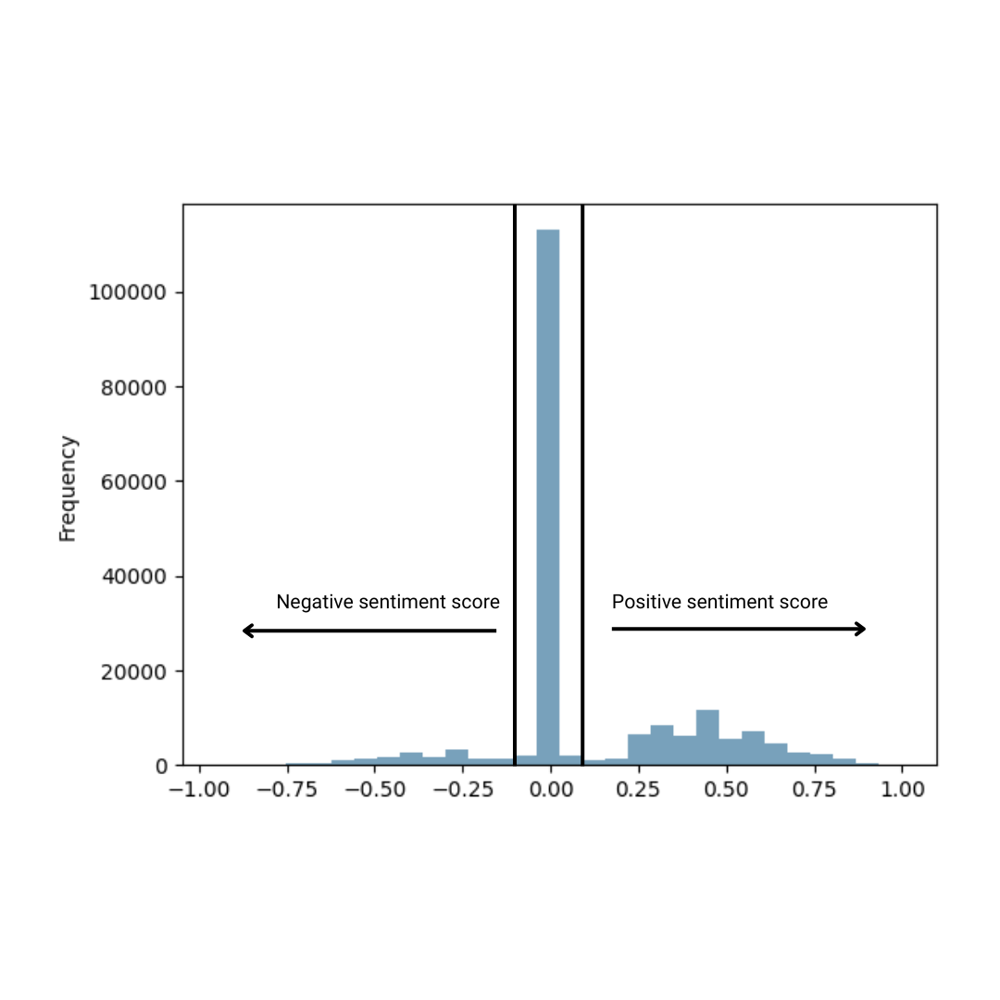
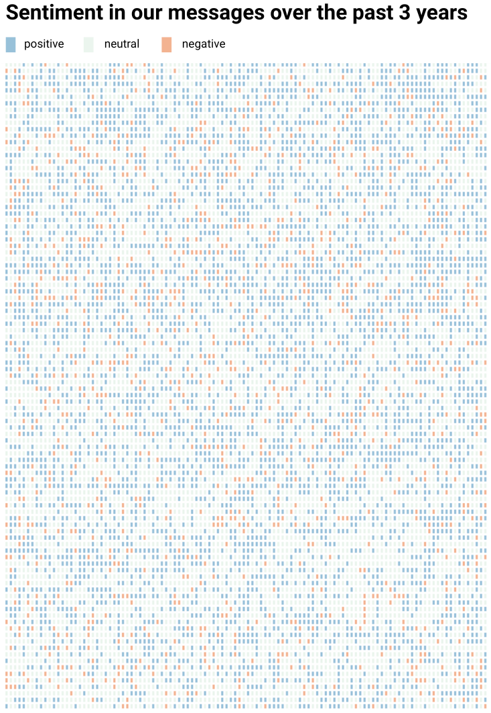

by Kat Ventura
for Juan Marco Azurin
MARCO Azurin
Marco Azurin
Dear Marco:
Happy third anniversary! We made it to April 14, 2025 — and that, in itself, is a feat. Today is the culmination of all the days we let each other hold us too close, hurt us too deep, and ruin our sleep. That last part, I’ve come to realize, started long before the 12-hour time difference or the interruptions from Molly. I’ve been interrupting your nights with three-hour calls ever since you first messaged me on Instagram.
While our interaction started on Instagram, our conversation continued on Telegram. Our Telegram chat came to life on February 18, 2022, at exactly 9:57 PM PST—and that’s the chat I wanted to explore in this data story.
So when we sent our 190,858th message on February 18, 2025, I decided to download our chat history and analyze our messages. It’s one thing to say ‘I choose you today,’ but it’s in the quiet, everyday actions—like sending a good morning message, replying even when it’s hard, or opening Telegram after a tough conversation—that the choice truly comes to life.
This data story is shaped by everything I learned since coming to New York and I'm using it to keep a promise I made to you on that cloudy Wednesday morning: that one day, you'd be part of my story.
When we started our relationship, we thought we would run out of things to say. But as you will soon see (and might have realized by now), that was not the case.
This is our Telegram chat history where each pixel is a message. We sent a total of
190,858 messages in 3 years.
You sent 102,115 messages
which makes up 54% of our chat
I sent 88, 743 messages
which makes up 46% of our chat.
We sent 8,941 reactions
🫡🫡🫡
We called each other 585 times on Telegram. Altogether, we spent 358 hours, 42 minutes, and 49 seconds on the phone. On average, each call lasted 43 minutes and 34 seconds. Our longest call stretched to nearly six hours, and that happened on March 21, 2022.
This does not include the calls we made on Google Meet, which I counted by getting the number of times you sent me a link haha! We sent 172 Google Meet links on Telegram in the last three years.
One of the first questions I wanted the dataset to answer was: 'What names did Marco call me?'. I have been meaning to keep a list of all the clever and oftentimes pilit variations you had for "kitkat" but it was difficult keep up! And because sifting through the dataset for every word that might refer to me would mean training a large language model, I went for the next best thing: filtering every message you sent that starts with 'hi,' 'hello' or 'hey,' and then determining whether the word that followed was a nickname or not.
I ended up with a list of 177 nicknames, some names were the same but spelled slightly differently. Also included in the list is 'you' or 'u' which you have used a couple of times when you're gigil. Some names were hard to identify at first because they appeared in phrases such as 'I watch Shimpshons' or 'my sentimental kitty.' You even called me 'Jonathan' once which I had to verify and count as a nickname because you were in fact referring to me.
I also gave you nicknames on Telegram, 20 to be exact – but none as silly as 'snik snak'—which, by the way, you wrote both as 'snik snak' and 'sniksnak'. 'Bub' was my favorite, I used it 588 times in the chat. The rest are variations of bub, like bud, buddy, bubby, bubs, buck, hub and bb.
Now we go from counting nicknames to counting the number of times a certain word or phrase was sent on Telegram. Starting with 'love you.'
It’s not a competition, but you were the first to say ‘I love you.’ We had been dating for three months and had just come from a dinner with your family — the first time I met them. It was also the first time you actually called me your ‘girlfriend,’ when you introduced me to Ate Ana.
I know it took me some time to say it back. While I can’t remember the exact moment I said it in person, the data shows I started saying ‘I love you’ in July 2022.
When I moved to New York a year later, the ‘I love you’ texts became more frequent, and I started sending them a bit more often than you did. Over the course of three years, we exchanged 1,026 ‘I love you’ texts — 52% were from me, and 48% were from you, Marco.
And what’s even funnier, bub, is that you sent me the most ‘miss you’ messages early in the relationship and right before I left for New York. Shlong ka! In July 2022 alone, you sent me 25 ‘miss you’ messages. The highest number came on July 11, when you told me you missed me in six separate messages—minutes apart. Ano ba ‘yan!
Finally, we give a value to the emotion sent to each message by rating sentiment. Like Star Wars, Python has a package called VADER that stands for Valence Aware Dictionary and sEntiment Reasoner. What VADER does is it scores and categorizes messages as positive, neutral and negative based on the words used. Messages with scores between -0.05 and 0.05 are considered neutral, while scores below or above that range are classified as negative or positive, respectively.
Of the 190,858 messages we sent on Telegram, 58% were neutral, 34% were positive, and 8% were negative. This is sentiment chart, where each pixel is a message.

When we talk about our day or ask how the other is doing, these messages are considered neutral. But when we say 'good night' or add 'mwah' in our chat, the message turns positive. Negative messages show up when we express that things didn’t go our way that day, or when I sprinkle my messages with curse words like 'damn' and 'fuck'—that message automatically becomes negative.
One caveat to this sentiment analysis is that I don’t know how well it works with Filipino or how accurately it detects sarcasm. But since our chat is mostly in English, the scores should not be too far off from the truth.

These past three years have brought us many challenges and much joy. I think of how the most pivotal moments in our lives happened when we were together — losing a loved one, living independently, releasing an album, and earning a degree — and how we’ve each become a witness to the other's journey. They say people get married, or in our case, enter into a relationship because we want to witness someone’s life and have ours witnessed in return. I’m always grateful to be a witness to your life, and somehow, a part of your story.
I’ll end this data story with a message we sent each other that received one of the highest positive sentiment compound scores.
Happy third anniversary, bub! I love you mwah!